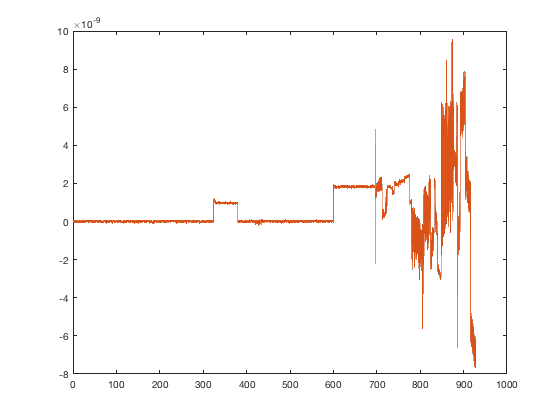
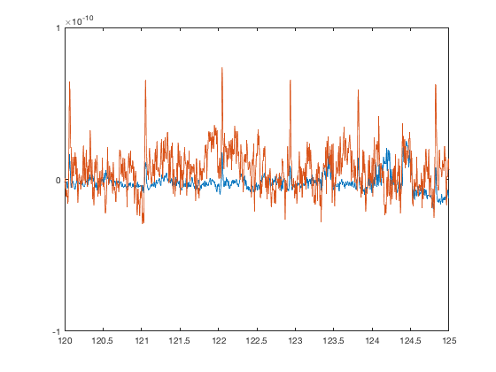
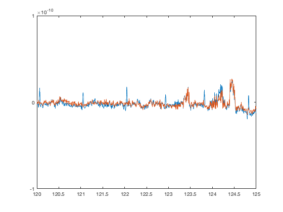

Preproc - AFRICA (ICA artefact removal)
OSL provides a framework for employing Independent Component Analysis (ICA) to remove certain artefacts from MEG data. Using this framework, sources of interference, such as eye-blinks, ECG and line noise, can be separated from the genuine MEG data and removed.
Contents
To use ICA denoising, you will use the function osl_africa.m. osl_africa can currently be applied to Elekta Neuromag and CTF data.
The de-noising process has three stages:
1. Decomposition of data into independent components.
- Here, the MEG data is extracted from the SPM object.
- Each sensor type is normalised by its smallest eigenvalue.
- Bad epochs (as defined by oslview), bad trials and bad channels are removed.
- fastica is used to decompose the data into a set of independent time courses and associated topographies.
- The default parameters are recommended.
2. Classification of artefact components
- This stage will require user-input.
3. Subtraction of artefact components from data to yield denoised data.
- This final stage is automated and should not require any user input.
- The independent time courses are subtracted from the MEG data. This is implemented via the spm_eeg_montage function which means that subsequent leadfields will be corrected.
To start, load an MEEG object
D = spm_eeg_load(fullfile(osldir,'example_data','preproc_example','manual','subject1_spm_meeg.mat'))
SPM M/EEG data object
Type: continuous
Transform: time
1 conditions
323 channels
232000 samples/trial
1 trials
Sampling frequency: 250 Hz
Loaded from file /Users/romesh/oxford_postdoc/toolboxes/osl/example_data/preproc_example/manual/subject1_spm_meeg.mat
Use the syntax D(channels, samples, trials) to access the data
Type "methods('meeg')" for the list of methods performing other operations with the object
Type "help meeg/method_name" to get help about methods
The main entry point is the function osl_africa. The first argument is the MEEG object, and then key-value pairs of options. The most important options to be aware of are
- do_ica - Perform the ICA decomposition (stage 1, time consuming)
- do_ident - Classify ICA components and select bad channels
- do_remove - Use the bad channels to write an online montage
- used_maxfilter - If working with Elekta data, identify fewer components
- ident_func - Select the identification function (more below)
By default, all three stages will be run, and manual component selection will be used. As we are working with Elekta data , make sure that used_maxfilter is set. To run only the first stage, use
D = osl_africa(D,'do_ica',true,'do_ident',false,'do_remove',false,'used_maxfilter',true);
Number of signals: 306 Number of samples: 232000 Calculating covariance... Reducing dimension... Selected [ 62 ] dimensions. Smallest remaining (non-zero) eigenvalue [ 2.20908 ] Largest remaining (non-zero) eigenvalue [ 8.5077e+08 ] Sum of removed eigenvalues [ 7.04886 ] [ 100 ] % of (non-zero) eigenvalues retained. Whitening... Check: covariance differs from identity by [ 1.63557e-09 ]. Used approach [ symm ]. Used nonlinearity [ tanh ]. Using stabilized algorithm. Starting ICA calculation... Step no. 1 Step no. 2, change in value of estimate: 0.511 Step no. 3, change in value of estimate: 0.499 Step no. 4, change in value of estimate: 0.442 Step no. 5, change in value of estimate: 0.277 Step no. 6, change in value of estimate: 0.279 Step no. 7, change in value of estimate: 0.363 Step no. 8, change in value of estimate: 0.641 Step no. 9, change in value of estimate: 0.857 Step no. 10, change in value of estimate: 0.838 Step no. 11, change in value of estimate: 0.598 Step no. 12, change in value of estimate: 0.241 Step no. 13, change in value of estimate: 0.0765 Step no. 14, change in value of estimate: 0.0155 Step no. 15, change in value of estimate: 0.00785 Step no. 16, change in value of estimate: 0.00842 Step no. 17, change in value of estimate: 0.0102 Step no. 18, change in value of estimate: 0.011 Step no. 19, change in value of estimate: 0.0106 Step no. 20, change in value of estimate: 0.00853 Step no. 21, change in value of estimate: 0.0061 Step no. 22, change in value of estimate: 0.0039 Step no. 23, change in value of estimate: 0.00303 Step no. 24, change in value of estimate: 0.0027 Step no. 25, change in value of estimate: 0.00255 Step no. 26, change in value of estimate: 0.00268 Step no. 27, change in value of estimate: 0.00301 Step no. 28, change in value of estimate: 0.00324 Step no. 29, change in value of estimate: 0.00314 Step no. 30, change in value of estimate: 0.00271 Step no. 31, change in value of estimate: 0.00218 Step no. 32, change in value of estimate: 0.00173 Step no. 33, change in value of estimate: 0.00163 Step no. 34, change in value of estimate: 0.00149 Step no. 35, change in value of estimate: 0.00132 Step no. 36, change in value of estimate: 0.00114 Step no. 37, change in value of estimate: 0.000975 Step no. 38, change in value of estimate: 0.000823 Step no. 39, change in value of estimate: 0.000733 Step no. 40, change in value of estimate: 0.000822 Step no. 41, change in value of estimate: 0.00103 Step no. 42, change in value of estimate: 0.00126 Step no. 43, change in value of estimate: 0.00144 Step no. 44, change in value of estimate: 0.00149 Step no. 45, change in value of estimate: 0.0013 Step no. 46, change in value of estimate: 0.000921 Step no. 47, change in value of estimate: 0.000564 Step no. 48, change in value of estimate: 0.000356 Step no. 49, change in value of estimate: 0.000253 Step no. 50, change in value of estimate: 0.000198 Step no. 51, change in value of estimate: 0.000163 Step no. 52, change in value of estimate: 0.000138 Step no. 53, change in value of estimate: 0.00012 Step no. 54, change in value of estimate: 0.000105 Convergence after 55 steps Adding the mean back to the data. Precomputing sensor topographies for modality MEGMAG Precomputing sensor topographies for modality MEGPLANAR ** Saving changes to disk ** Using existing bad_components
For the example data, this should take on the order of 2 minutes, depending on your computer. It could potentially be much longer depending on your data. It is important that you remove bad segments from the data using oslview() prior to running osl_africa() as this will have a big effect on the inference of the components.. A new field has been added to the MEEG object storing the results of the calculation
D.ica
ans =
struct with fields:
params: [1×1 struct]
eigs_preNorm: [306×1 double]
eigs_postNorm: [306×1 double]
good_samples: [1×232000 logical]
chan_inds: [1×306 double]
norm_vec: [306×1 double]
sm: [323×62 double]
topos: [62×2 struct]
metrics: []
bad_components: []
auto_reason: {}
modalities: {'MEGMAG' 'MEGPLANAR'}
In general, osl_africa makes changes in memory and returns an MEEG object that can optionally be saved, rather than writing changes to disk automatically. However, because ICA is potentially very time consuming, these results are automatically saved to disk. It's possible to end up in a confusing situation - for example
D = spm_eeg_load(fname) D.ica % Error because field does not exist osl_africa(D) % ICA results saved to disk D.ica % Error because D has not been reloaded D = spm_eeg_load(fname) D.ica % Results work
To avoid this, make sure you use D = osl_africa(D,...) rather than osl_africa(D,...).
It is also worth remembering that the ICA algorithm is randomly initialized, which means that if you run it again, you might not get the same decomposition. To make your results reproducible, set the random number generator in Matlab (e.g. rng(0)) before running osl_africa.
If ICA results are present, osl_africa will not rerun the ICA stage by default unless you set do_ica to true. There are two artefact rejection modes - automatic, which will classify the ICA components based on various criteria, and manual. The manual mode opens a GUI that you can use to inspect and classify artefacts with. To display it, use:
D = osl_africa(D,'do_ident','manual','do_remove',false);
Using existing ICA decomposition
This opens the ICA component identification GUI. Often you will want to compare the ICA components to other sensor data such as EOG and EMG. These are the defaults, but you can specify the chantypes for the channels you want to correlate the components with explicitly:
D = osl_africa(D,'do_ident','manual','do_remove',false,'artefact_channels',{'EOG','ECG'});
Using existing ICA decomposition
Mark a component as bad using the red cross button toolbar, and then close the GUI. If you inspect D, you can see that the bad components have been marked in D.ica.bad_components. At the moment, there are no online montages. To remove these components via an online montage, use
has_montage(D); D = osl_africa(D,'do_ident',false,'do_remove',true);
*0 - none (323 channels) Using existing ICA decomposition Using existing bad_components
Note that with do_ident=false the classification step will be skipped, and the rejection will proceed with whatever is already marked in D.ica.bad_components.
has_montage(D);
0 - none (323 channels) *1 - AFRICA denoised data (323 channels)
Remember that these changes are only in memory, and you need to use D.save() to write the changes to disk. Normally you would run both the identification and the component removal in a single step, using
D = osl_africa(D)
Note that if you run this now, you will have two online montages
has_montage(D)
It can be helpful to delete any unwanted montages prior to using osl_africa e.g.
D = D.montage('remove',1) % Remove the first montage has_montage(D)
Automatic component removal
You can use automatic rejection by setting 'do_ident' to 'auto' (which is the default). For example
D_automatic = osl_africa(D,'used_maxfilter',1,'artefact_channels',{'EOG','ECG'})
Using existing ICA decomposition
Rejecting IC 32 due to correlation with Channel 307_EOG (correlation = 0.55)
Rejecting IC 5 due to correlation with Channel 308_ECG (correlation = 0.55)
SPM M/EEG data object
Type: continuous
Transform: time
1 conditions
323 channels
232000 samples/trial
1 trials
Sampling frequency: 250 Hz
Loaded from file /Users/romesh/oxford_postdoc/toolboxes/osl/example_data/preproc_example/manual/subject1_spm_meeg.mat
2 online montage(s) setup
Current montage applied (0=none): 2 ,named: "AFRICA denoised data"
Use the syntax D(channels, samples, trials) to access the data
Type "methods('meeg')" for the list of methods performing other operations with the object
Type "help meeg/method_name" to get help about methods
This will automatically assign the bad components. If you redo the manual artefact selection, you can make changes to the assignment if you like.
D_touchup = osl_africa(D_automatic,'do_ident','manual','used_maxfilter',1,'artefact_channels',{'EOG','ECG'});
Using existing ICA decomposition IC 5 marked bad IC 32 marked bad
There are a number of additional options available for the automatic rejection. These are
- auto_max_num_artefact_comps - Maximum number of new components to reject for each reason
- auto_do_mains - whether to identify mains components (false by default)
- auto_mains_kurt_thresh - Reject components where the highest power in near the mains frequency and the kurtosis exceeds this threshold
- auto_do_kurt - Reject components based on kurtosis
- auto_kurtosis_thresh - Reject components where the kurtosis exceeds this value
- auto_kurtosis_wthresh - Detect outliers in kurtosis - raise this to detect more outliers
- auto_artefact_chans_corr_thresh - Reject components whose correlation with one of the artefact channels exceeds this value
The default values are generally a good starting point.
Effect of including artefacts in the data
As discussed above, it is important that bad epochs are excluded prior to running AFRICA. There are actually two problems that can occur if you don't remove them
- You might not be able to identify components that correlate with any of the artefact channels
- You might find a component that looks like an artefact channel, but it does not get removed correctly
The latter point is particularly subtle because it is possible to miss this entirely if you do not inspect the sensor data after running AFRICA. In this tutorial example, we have run AFRICA thus far without including any artefact rejection. However, the timeseries contains a number of artefacts. We can plot the raw data for one of the sensors before and after AFRICA
D1 = D_automatic.montage('switch',0); % Raw sensors D2 = D_automatic.montage('switch',D_automatic.montage('getnumber')); % Result after AFRICA figure plot(D1.time,[D1(1,:).',D2(1,:)']);
As you can see, there are large artefacts in the middle and especially towards the end of the recording. Now we will zoom in to see what the ICA removal has done
set(gca,'XLim',[120 125],'YLim',[-1 1]*1e-10)
The artefact removal is completely wrong - the ECG component has been introduced into the sensor data even more strongly than it was originally present! It's critical that the artefacts are removed completely. We can do this by excluding the bad times. Normally you would do this with either oslview or osl_detect_artefacts. For this tutorial, we will just add these artefact times in directly
ev(1) = struct('type','artefact_OSL','value','all','duration',81.7271,'time',310.0822,'offset',0); ev(2) = struct('type','artefact_OSL','value','all','duration',334.6752,'time',593.3288,'offset',0); D_automatic = events(D_automatic,1,ev);
Now we will rerun the ICA by setting do_ica=true
D_automatic = osl_africa(D_automatic,'do_ica',true,'used_maxfilter',1,'artefact_channels',{'EOG','ECG'})
Number of signals: 306
Number of samples: 127899
Calculating covariance...
Reducing dimension...
Selected [ 62 ] dimensions.
Smallest remaining (non-zero) eigenvalue [ 2.12928 ]
Largest remaining (non-zero) eigenvalue [ 33857.7 ]
Sum of removed eigenvalues [ 7.7227 ]
[ 99.989 ] % of (non-zero) eigenvalues retained.
Whitening...
Check: covariance differs from identity by [ 9.83275e-13 ].
Used approach [ symm ].
Used nonlinearity [ tanh ].
Using stabilized algorithm.
Starting ICA calculation...
Step no. 1
Step no. 2, change in value of estimate: 0.975
...
...
...
Step no. 131, change in value of estimate: 0.000123
Convergence after 132 steps
Adding the mean back to the data.
Precomputing sensor topographies for modality MEGMAG
Precomputing sensor topographies for modality MEGPLANAR
** Saving changes to disk **
Rejecting IC 54 due to correlation with Channel 307_EOG (correlation = 0.58)
Rejecting IC 21 due to correlation with Channel 308_ECG (correlation = 0.59)
SPM M/EEG data object
Type: continuous
Transform: time
1 conditions
323 channels
232000 samples/trial
1 trials
Sampling frequency: 250 Hz
Loaded from file /Users/romesh/oxford_postdoc/toolboxes/osl/example_data/preproc_example/manual/subject1_spm_meeg.mat
3 online montage(s) setup
Current montage applied (0=none): 3 ,named: "AFRICA denoised data"
Use the syntax D(channels, samples, trials) to access the data
Type "methods('meeg')" for the list of methods performing other operations with the object
Type "help meeg/method_name" to get help about methods
Now we can go back to the time series and verify that the ICA component is now correctly removed
figure plot(D1.time,[D1(1,:).',D_automatic(1,:)']); set(gca,'XLim',[120 125],'YLim',[-1 1]*1e-10)
Description of method in publications
Independent component analysis (ICA) was used to decompose the sensor data for each session into 150 temporally independent components (tICs) and associated sensor topographies using FastICA (http://research.ics.aalto.fi/ica/fastica). Artifact components were classified via the following procedure. Eye-blink, cardiac and mains interference components were manually identified by the combined inspection of the spatial topography, time course, kurtosis of the time course and frequency spectrum for all components. Eye-blink artifacts typically exhibited high kurtosis (>20), a repeated blink structure in the time course and very structured spatial topographies. Cardiac component time courses strongly resembled the typical ECG signals, as well as having high kurtosis (>20). Mains interference had extremely low kurtosis (typically <−1) and a frequency spectrum dominated by 50 Hz line noise. Artefacts were then rejected by subtracting them out of the data.